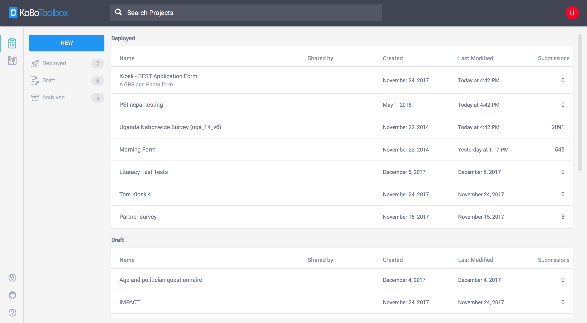
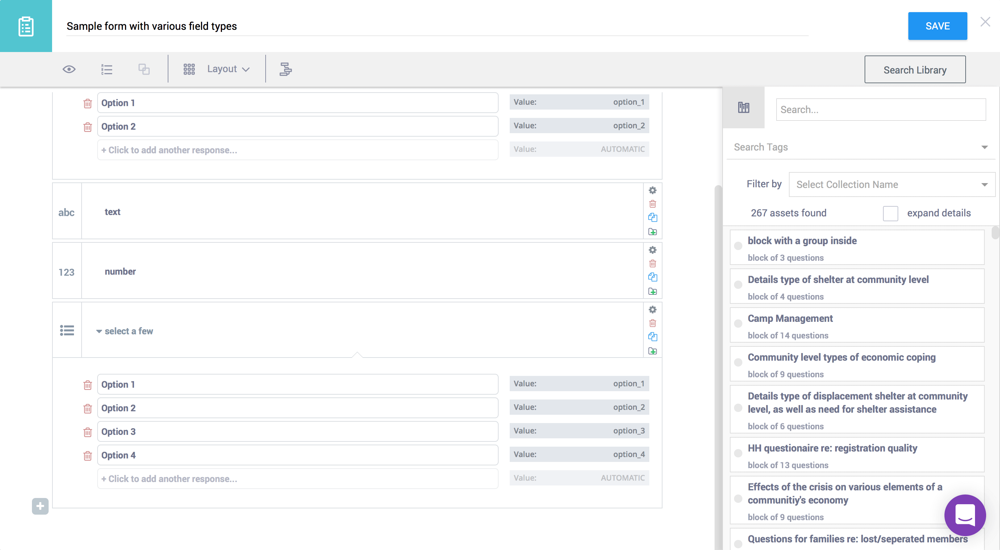
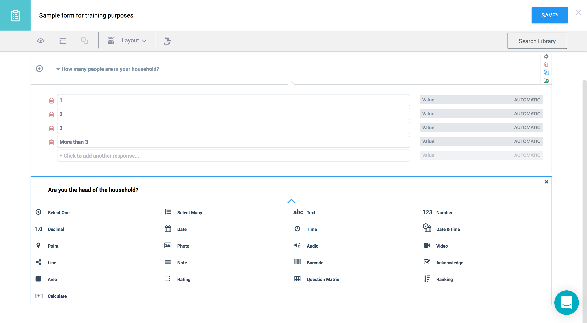
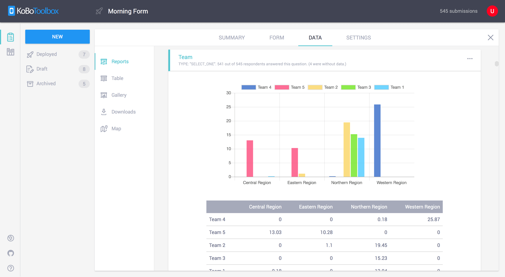
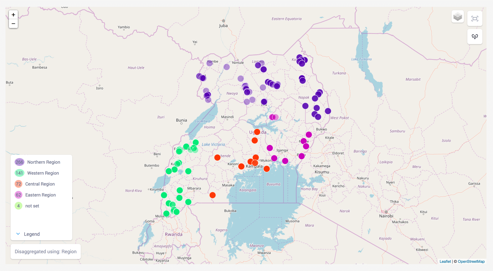
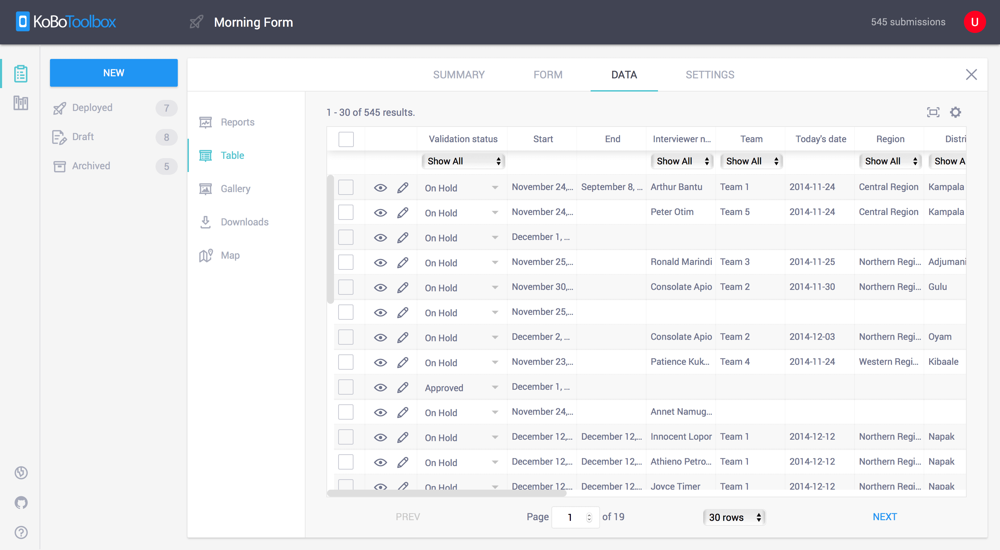

Features
- 

- 
- 
Form Builder
- Design forms quickly and easily using our intuitive form builder
- Reuse existing questions and blocks of questions and manage them in the question library
- Build complex forms with skip logic and validation
- More than 20 different question types available including location, image, video, rating, matrix, etc.
- Easily share projects with colleagues and set granular permission levels
- Import and export XLSForms Import via URL or upload from your computer
Collect Data
- Online and Offline
- On phones, tablets or any browser Using KoboCollect on Android devices and Enketo on any modern browser
- Synchronize data via SSL Ensures data can't be read by a third party
- Strong safeguards against data loss Even on very long interviews
- Data immediately available right after it's collected
- 
- 
- 

Analyze and Manage Data
- Create summary reports with graphs and tables and fine-tune your report's charts, colors and questions
- Visualize collected data on a map includes a heatmap, clustering, other base layers, etc.)
- Disaggregate data in reports and mapsI.e. by gender, region or educational level
- Export all your data at any time Supported formats: Excel, CSV, KML, ZIP (for media) and SPSS
- Access your data through our robust API
Get Started
Get started with KoBoToolbox now, it's free and it takes under a minute. We have two publicly-available instances of KoBoToolbox you can choose from:
Advanced users can also install KoBoToolbox on their own server (or on a local machine) using Docker. See our kobo-docker repository on GitHub for details.
About KoBoToolbox
KoBoToolbox is a suite of tools for field data collection for use in challenging environments. Our software is free and open source. Most of our users are people working in humanitarian crises, as well as aid professionals and researchers working in developing countries. Our team of developers and researchers are based in Cambridge, MA and many other places around the world.
Quickly collecting reliable information in a humanitarian crisis – especially following a natural disaster such as a large earthquake or a typhoon taking place in a poor country – is the critical link to saving the lives of the most vulnerable. Understanding the population’s needs is often neglected for lack of quick means to gather and analyze this crucial information. KoBoToolbox, developed by the Harvard Humanitarian Initiative, is an open source suite of tools for data collection and analysis in humanitarian emergencies and other challenging environments that was built to address this gap. KoBoToolbox is funded entirely through generous grants and donations from our partners.
Open Source Development supported by
with additional support from
Development
Our work is open-source. For more on our projects and to learn how you can contribute, click on one of the projects below. You can also go to our organization page on GitHub for a full list of our projects.
Our Team
We test our products using BrowserStack.
Support
For any issues, questions or for more information, please head to our support portal at
help.kobotoolbox.orgYou can also follow us on Twitter for product updates, media mentions and service notices. For any other inquires or just to get in touch, please email info@kobotoolbox.org